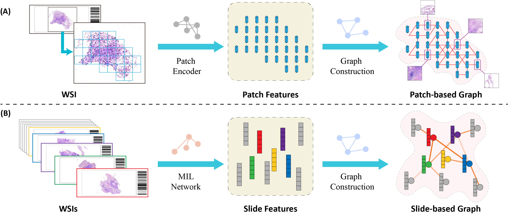
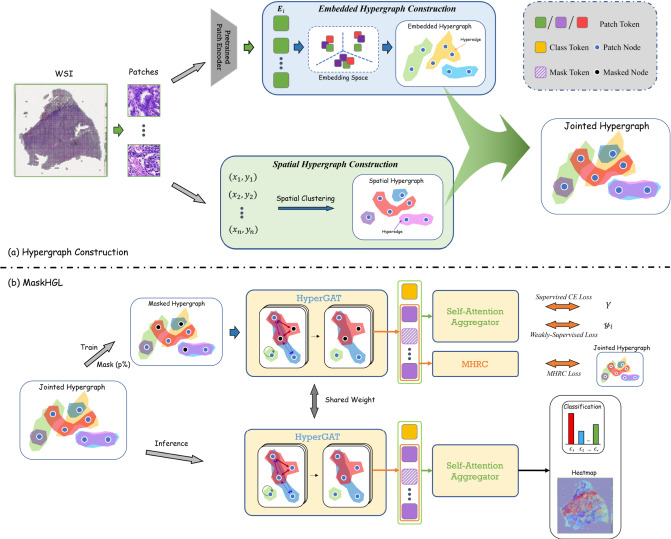
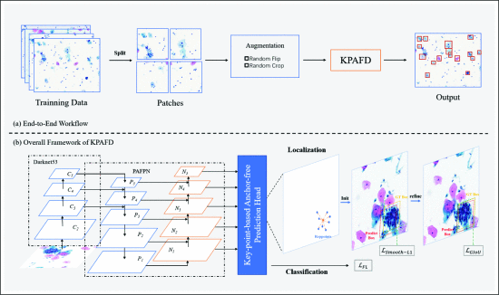

|
|
Tong Shu
束童 M.Sc candidate
School of Computer Science and Information Engineering, Hefei University of Technology, Hefei, China
I received my bachelor's degree in Software Engineering from Hefei University of Technology in 2022 and pursuing a master's degree supervised by Jun Shi and Yushan Zheng.
My research interests are Computer Vision and Medical Image Analysis, especially Histopathology Whole Slide Image Analysis.
Email: t.shu@mail.hfut.edu.cn
Github: github.com/TongShu-HFUT
ORCID: 0009-0005-2820-3875
CV: Curriculum Vitae
|
|
|
|
Research |

|
Graph / hypergraph in pathological whole slide image analysis, 2022-present
Graph and graph neural networks (GNN) have been extensively used in many research due to their efficiency and flexibility in modeling relationships among entities. However, in pathological whole slide image analysis, it is evident that the potential of the image has not been fully unleashed yet. I am dedicated to developing computer-aided diagnostic algorithms that are highly interpretable even in situations where data is limited, based on graphs and their various variants.
|

|
AI-based cervical cancer screening, 2020-2022
In this stage, my main focus is on developing AI-based cervical cancer screening algorithms and participating in undergraduate innovation and entrepreneurship projects and competitions. During this process, I became familiar with various medical data processing and classical deep learning (especially computer vision) algorithms, and attempted to improve existing object detection algorithms by combining the cytological characteristics of cervical cancer.
|
|
|
Publications |
2024 |

|
SlideGCD: Slide-based Graph Collaborative Training with Knowledge Distillation for Whole Slide Image Classification
Tong Shu, Jun Shi, Dongdong Sun, Zhiguo Jiang, and Yushan Zheng*
Medical Image Computing and Computer Assisted Intervention (MICCAI), 2024
PDF
Abstract
BibTeX
Code
Existing WSI analysis methods lie on the consensus that histopathological characteristics of tumors are significant guidance for cancer diagnostics. Particularly, as the evolution of cancers is a continuous process, the correlations and differences across various stages, anatomical locations and patients should be taken into account. However, recent research mainly focuses on the inner-contextual information in a single WSI, ignoring the correlations between slides. To verify whether introducing the slide inter-correlations can bring improvements to WSI representation learning, we propose a generic WSI analysis pipeline SlideGCD that considers the existing multi-instance learning (MIL) methods as the backbone and forge the WSI classification task as a node classification problem. More specifically, SlideGCD declares a node buffer that stores previous slide embeddings for subsequent extensive slide-based graph construction and conducts graph learning to explore the inter-correlations implied in the slide-based graph. Moreover, we frame the MIL classifier and graph learning into two parallel workflows and deploy the knowledge distillation to transfer the differentiable information to the graph neural network. The consistent performance boosting, brought by SlideGCD, of four previous state-of-the-art MIL methods is observed on two TCGA benchmark datasets.
@article{shu2024slidegcd,
title = {SlideGCD: Slide-based Graph Collaborative Training with Knowledge Distillation for Whole Slide Image Classification},
author = {Tong Shu and Jun Shi and Dongdong Sun and Zhiguo Jiang and Yushan Zheng},
booktitle = {Medical Image Computing and Computer Assisted Intervention -- MICCAI 2024},
year = {2024},
}
|

|
Masked hypergraph learning for weakly supervised histopathology whole slide image classification
Jun Shi, Tong Shu, Kun Wu, Zhiguo Jiang, Liping Zheng, Wei Wang, Haibo Wu, and Yushan Zheng*
Computer Methods and Programs in Biomedicine, 2024
Abstract
BibTeX
Code
Background and objective
Graph neural network (GNN) has been extensively used in histopathology whole slide image (WSI) analysis due to the efficiency and flexibility in modelling relationships among entities. However, most existing GNN-based WSI analysis methods only consider the pairwise correlation of patches from one single perspective (e.g. spatial affinity or embedding similarity) yet ignore the intrinsic non-pairwise relationships present in gigapixel WSI, which are likely to contribute to feature learning and downstream tasks. The objective of this study is therefore to explore the non-pairwise relationships in histopathology WSI and exploit them to guide the learning of slide-level representations for better classification performance.
Methods
In this paper, we propose a novel Masked HyperGraph Learning (MaskHGL) framework for weakly supervised histopathology WSI classification. Compared with most GNN-based WSI classification methods, MaskHGL exploits the non-pairwise correlations between patches with hypergraph and global message passing conducted by hypergraph convolution. Concretely, multi-perspective hypergraphs are first built for each WSI, then hypergraph attention is introduced into the jointed hypergraph to propagate the non-pairwise relationships and thus yield more discriminative node representation. More importantly, a masked hypergraph reconstruction module is devised to guide the hypergraph learning which can generate more powerful robustness and generalization than the method only using hypergraph modelling. Additionally, a self-attention-based node aggregator is also applied to explore the global correlation of patches in WSI and produce the slide-level representation for classification.
Results
The proposed method is evaluated on two public TCGA benchmark datasets and one in-house dataset. On the public TCGA-LUNG (1494 WSIs) and TCGA-EGFR (696 WSIs) test set, the area under receiver operating characteristic (ROC) curve (AUC) were 0.9752±0.0024 and 0.7421±0.0380, respectively. On the USTC-EGFR (754 WSIs) dataset, MaskHGL achieved significantly better performance with an AUC of 0.8745±0.0100, which surpassed the second-best state-of-the-art method SlideGraph+ 2.64%.
Conclusions
MaskHGL shows a great improvement, brought by considering the intrinsic non-pairwise relationships within WSI, in multiple downstream WSI classification tasks. In particular, the designed masked hypergraph reconstruction module promisingly alleviates the data scarcity and greatly enhances the robustness and classification ability of our MaskHGL. Notably, it has shown great potential in cancer subtyping and fine-grained lung cancer gene mutation prediction from hematoxylin and eosin (H&E) stained WSIs.
@article{SHI2024108237,
title = {Masked hypergraph learning for weakly supervised histopathology whole slide image classification},
journal = {Computer Methods and Programs in Biomedicine},
pages = {108237},
year = {2024},
doi = {https://doi.org/10.1016/j.cmpb.2024.108237},
author = {Jun Shi and Tong Shu and Kun Wu and Zhiguo Jiang and Liping Zheng and Wei Wang and Haibo Wu and Yushan Zheng},
}
|
2023 |

|
A Key-Points Based Anchor-Free Cervical Cell Detector
Tong Shu, Jun Shi*, Yushan Zheng*, Zhiguo Jiang, and Lanlan Yu
IEEE Engineering in Medicine & Biology Society (EMBC), 2023
Abstract
BibTeX
Cervical cell detection is crucial to cervical cytology screening at early stage. Currently most cervical cell detection methods use anchor-based pipeline to achieve the localization and classification of cells, e.g. faster R-CNN and YOLOv3. However, the anchors generally need to be pre-defined before training and the detection performance is inevitably sensitive to these pre-defined hyperparameters (e.g. number of anchors, anchor size and aspect ratios). More importantly, these preset anchors fail to conform to the cells with different morphology at inference phase. In this paper, we present a key-points based anchor-free cervical cell detector based on YOLOv3. Compared with the conventional YOLOv3, the proposed method applies a key-points based anchor-free strategy to represent the cells in the initial prediction phase instead of the preset anchors. Therefore, it can generate more desirable cell localization effect through refinement. Furthermore, PAFPN is applied to enhance the feature hierarchy. GIoU loss is also introduced to optimize the small cell localization in addition to focal loss and smooth L1 loss. Experimental results on cervical cytology ROI datasets demonstrate the effectiveness of our method for cervical cell detection and the robustness to different liquid-based preparation styles (i.e. drop-slide, membrane-based and sedimentation).
@InProceedings{shu2023a,
author = {Tong Shu, Jun Shi, Yushan Zheng, Zhiguo Jiang, Lanlan Yu},
title = {A Key-Points Based Anchor-Free Cervical Cell Detector},
booktitle = {2023 45th Annual International Conference of the IEEE Engineering in Medicine & Biology Society (EMBC)},
year = {2023},
pages = {1-5},
doi = {10.1109/EMBC40787.2023.10341092}},
}
|
|
Manuscripts |
2024 |

|
Slide-based Graph Collaborative Training for Histopathology Whole Slide Image Analysis
Jun Shi, Tong Shu, Zhiguo Jiang, Wei Wang, Haibo Wu, Yushan Zheng*
Submitted to IEEE Transactions on Medical Imaging (TMI)
PDF
Abstract
BibTeX
The development of computational pathology lies in the consensus that pathological characteristics of tumors are significant guidance for cancer diagnostics. Most existing research focuses on the inner-contextual information within each WSI yet ignores the possible inter-correlations between slides. As the development of tumors is a continuous process involving a series of histological, morphological, and genetic changes that accumulate over time, the similarities and differences between WSIs across various stages, grades, locations and patients should potentially contribute to the representation of WSIs and deserve to be taken into account in WSI modeling. To verify the advancement of introducing the slide inter-correlations into the representation learning of WSIs, we proposed a generic WSI analysis pipeline SlideGCD that can be adapted to any existing Multiple Instance Learning (MIL) frameworks and improve their performance. With the new paradigm, the prior knowledge of cancer development can participate in the end-to-end workflow, which concurrently initializes and refines the slide representation, as a guide for message passing in the slide-based graph. Extensive comparisons and experiments are conducted to validate the effectiveness and robustness of the proposed pipeline across 4 different tasks, including cancer subtyping, cancer staging, survival prediction, and gene mutation prediction, with 7 representative SOTA WSI analysis frameworks as backbones.
@article{shi2024slide,
title={Slide-based Graph Collaborative Training for Histopathology Whole Slide Image Analysis},
author={Shi, Jun and Shu, Tong and Jiang, Zhiguo and Wang, Wei and Wu, Haibo and Zheng, Yushan},
journal={arXiv preprint arXiv:2410.10260},
year={2024}
}
|
|
|
|
|